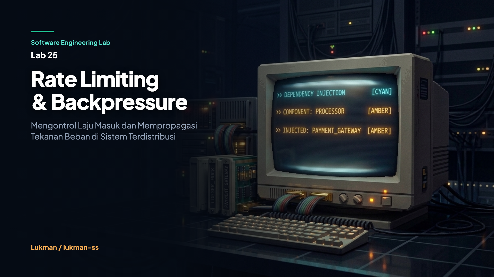

"Sistem tanpa backpressure adalah sistem yang menunda kebangkrutan memorinya sendiri. Mengendalikan laju di gerbang masuk dan mempropagasi sinyal penolakan ke belakang adalah syarat mutlak stabilitas sistem terdistribusi."
Sistem terdistribusi modern menghadapi ketegangan konstan: request masuk dapat melompat seketika melampaui kemampuan proses komponen hilir (downstream). Tanpa mekanisme kendali, ketimpangan ini memicu akumulasi antrean tak berbatas di memori, latensi membengkak drastis, timeout berantai, dan akhirnya sistem lumpuh total karena Out of Memory (OOM).
Hukum Little (Little's Law) merumuskan fenomena ini secara matematis: L = λ × W, di mana L adalah jumlah request in-flight di dalam sistem, λ adalah laju kedatangan (arrival rate), dan W adalah durasi rata-rata yang dihabiskan request dalam antrean dan eksekusi. Ketika laju kedatangan melebihi laju pemrosesan (drain rate), backlog bertumbuh mengikuti formula (arrival_rate - processing_rate) × waktu.
Sebagai contoh riil dari kalkulasi Lab 25: jika sistem menerima 5.000.000 request dengan laju pemrosesan tetap 2.000 request per detik, waktu yang dibutuhkan untuk menguras antrean mencapai 5.000.000 / 2.000 = 2.500 detik, atau setara dengan 41 menit 40 detik. Selama durasi tersebut, proses menimbun memori dalam jumlah masif. Layanan mungkin berjalan lancar pada kondisi sepi, tetapi bukan berarti arsitekturnya aman tanpa rate limiter dan backpressure.
Arsitektur penanganan beban berlebih bertumpu pada tiga mekanisme komplementer:
ErrQueueFull) alih-alih ditumpuk di RAM.Meskipun secara matematis keduanya setara sebagai alat pengukur (meter), sudut pandang pengendalian keduanya berbeda secara praktis:
| Dimensi Karakteristik | Token Bucket (Toleransi Burst) | Leaky Bucket (Traffic Smoothing) |
|---|---|---|
| Perilaku Utama | Mengizinkan burst sesaat hingga kapasitas B, membatasi rata-rata jangka panjang ke R. | Menghaluskan output trafik ke laju konstan R; membuang kelebihan air. |
| State yang Disimpan | Jumlah token yang tersedia untuk dikonsumsi saat ini. | Volume air saat ini yang sedang mengantre untuk dibocorkan. |
| Kondisi Penolakan | Token yang tersedia lebih kecil daripada n yang diminta (tokens < n). |
Penambahan volume air melebihi kapasitas tangki (water + 1 > capacity). |
| Skenario Ideal | API Gateway interaktif, user traffic dengan pola lonjakan wajar. | Egress rate limiting ke API pihak ketiga, modul NGINX limit_req. |
| Kode Respons Standar | HTTP 429 Too Many Requests (RFC 6585). | HTTP 429 atau HTTP 503 Service Unavailable. |
Alih-alih menggunakan goroutine background dan ticker periodik yang memboroskan CPU, implementasi Lab 25 menggunakan kalkulasi waktu berjalan pasif (lazy monotonic refill) pada setiap pemanggilan method:
func (tb *TokenBucket) AllowN(n float64) bool {
tb.mu.Lock()
defer tb.mu.Unlock()
now := time.Now()
elapsed := now.Sub(tb.lastRefill).Seconds()
tb.tokens = tb.tokens + elapsed*tb.refillRate
if tb.tokens > tb.capacity {
tb.tokens = tb.capacity
}
tb.lastRefill = now
if tb.tokens >= n {
tb.tokens -= n
return true
}
return false
}Kalkulasi berbasis time.Now() membaca monotonic clock Go untuk melindungi perhitungan dari pergeseran jam sistem (NTP adjustment). Penambahan token dibatasi maksimum sebesar capacity sehingga waktu idle yang panjang tidak menghasilkan akumulasi burst tanpa batas.
Ketika permintaan ditolak, server wajib memberi tahu klien kapan kuota akan tersedia kembali. Method RetryAfterSeconds membagi kekurangan token dengan laju pengisian dan membulatkannya ke atas:
func (tb *TokenBucket) RetryAfterSeconds(n float64) int {
tb.mu.Lock()
defer tb.mu.Unlock()
now := time.Now()
elapsed := now.Sub(tb.lastRefill).Seconds()
tokens := tb.tokens + elapsed*tb.refillRate
if tokens > tb.capacity {
tokens = tb.capacity
}
if tokens >= n {
return 0
}
needed := n - tokens
secs := needed / tb.refillRate
if secs <= 0 {
return 1
}
rounded := int(secs)
if float64(rounded) < secs {
rounded++
}
return rounded
}Hanya pada jalur ini klien menerima durasi tunggu yang akurat. Jika kebutuhan token tersisa 0.3 detik, pembulatan menghasilkan 1 detik, memastikan saat klien kembali mencoba, token sudah benar-benar terisi.
Banyak sistem naif menerapkan rate limiting berdasarkan alamat IP klien (RemoteAddr). Namun, di bawah Carrier-Grade NAT (RFC 6598), ribuan pengguna perangkat seluler atau ISP perumahan berbagi satu alamat IP publik yang sama. Pembatasan berbasis IP mengakibatkan collateral damage di mana satu pengguna bising melumpuhkan akses seluruh pengguna lain di IP tersebut.
Solusi yang diterapkan pada internal/ratelimit/registry.go adalah isolasi bucket per tenant key (API key atau Tenant ID) menggunakan pola double-checked locking:
func (r *Registry) Get(tenantKey string) *TokenBucket {
r.mu.RLock()
tb, exists := r.buckets[tenantKey]
r.mu.RUnlock()
if exists {
return tb
}
r.mu.Lock()
defer r.mu.Unlock()
if tb, exists = r.buckets[tenantKey]; exists {
return tb
}
tb = NewTokenBucket(r.capacity, r.refillRate)
r.buckets[tenantKey] = tb
return tb
}Backpressure pada Go diimplementasikan melalui channel berkapasitas tetap dengan idiom select-default:
func (bq *BoundedQueue) TrySubmit(job Job) error {
bq.stopMu.RLock()
defer bq.stopMu.RUnlock()
if bq.stopped {
return ErrQueueStopped
}
select {
case <-bq.ctx.Done():
return ErrQueueStopped
case bq.queue <- job:
bq.accepted.Add(1)
return nil
default:
bq.rejected.Add(1)
return ErrQueueFull
}
}Ketika kanal penuh, blok default dieksekusi tanpa alokasi memori tambahan dan tanpa menahan goroutine pemanggil. Penolakan seketika ini membebaskan thread server untuk melayani request lain atau mengembalikan status 503/429 ke edge.
Klien yang mengalami kegagalan sering kali melakukan retry dengan interval eksponensial kaku (misal 100ms, 200ms, 400ms). Ketika 1.000 klien gagal serempak akibat gangguan sesaat, seluruh klien akan mengirimkan retry tepat pada detik yang sama, menciptakan gelombang beban sinkron yang menghancurkan server hilir yang baru mulai pulih.
Algoritma Full Jitter dari Marc Brooker (AWS Architecture) memecahkan masalah ini dengan merandomisasi jeda tidur secara seragam dalam rentang eksponensial:
// Formula Full Jitter AWS:
// sleep = random_between(0, min(cap, base * 2^attempt))
expBackoff := baseFloat * math.Pow(2, float64(attempt))
temp := math.Min(capFloat, expBackoff)
sleep := rand.Float64() * tempAWS membuktikan bahwa Full Jitter menghasilkan waktu penyelesaian total terendah dan memotong beban persaingan server lebih dari 50% dibanding pendekatan deterministik tanpa jitter.
Komponen internal/httputil/middleware.go mengintegrasikan rate limiting ke pipeline HTTP Go standard library. Middleware mengekstrak header X-API-Key, menguji token bucket, dan mengembalikan status 429 Too Many Requests lengkap dengan header Retry-After dan payload JSON saat kuota habis.
w.Header().Set("Content-Type", "application/json")
w.Header().Set("Retry-After", strconv.Itoa(retryAfter))
w.WriteHeader(http.StatusTooManyRequests) // 429
_ = json.NewEncoder(w).Encode(RateLimitResponse{
Error: "rate_limit_exceeded",
RetryAfter: retryAfter,
})Di lingkungan produksi nyata, pertahanan dibangun berlapis:
CRITICAL_PLUS, CRITICAL, SHEDDABLE_PLUS, SHEDDABLE) dan menerapkan Retry Budget ketat: maksimal 3 attempt per request dan rasio retry klien dibatasi di bawah 10% dari total trafik.Seluruh modul telah diverifikasi secara deterministik menggunakan pengujian otomatis Go:
=== RUN TestTokenBucket_BurstAndRefill
--- PASS: TestTokenBucket_BurstAndRefill (0.05s)
=== RUN TestTokenBucket_ConcurrencyRace
--- PASS: TestTokenBucket_ConcurrencyRace (0.01s)
=== RUN TestLeakyBucket_LeakRate
--- PASS: TestLeakyBucket_LeakRate (0.02s)
=== RUN TestRegistry_TenantIsolation
--- PASS: TestRegistry_TenantIsolation (0.00s)
=== RUN TestBoundedQueue_RejectionUnderLoad
--- PASS: TestBoundedQueue_RejectionUnderLoad (0.08s)
=== RUN TestComputeBackoff_Bounds
--- PASS: TestComputeBackoff_Bounds (0.00s)
=== RUN TestRateLimitMiddleware_RFC6585
--- PASS: TestRateLimitMiddleware_RFC6585 (0.00s)
PASS: ok labs/25-rate-limiting-and-backpressure (15/15 tests PASS, race detector: clean)Eksekusi demo pada cmd/demo/main.go membuktikan 3 request pertama diizinkan burst lalu ditolak, buffer antrean menolak job ke-4 dan ke-6 saat penuh, serta jeda Full Jitter tersebar secara statistik.
Sebagai simulator rekayasa perangkat lunak, terdapat batasan yang harus dipahami secara transparan:
Rate limiting dan backpressure adalah dua sisi mata uang yang sama dalam rekayasa sistem terdistribusi. Polisikan pintu masuk dengan token bucket berbasis per-tenant key, potong penumpukan internal dengan bounded queue fast rejection, dan jinakkan percobaan ulang klien menggunakan Full Jitter. Dengan arsitektur berlapis ini, sistem bertransformasi dari rentan tumbang menjadi mampu bertahan dengan degradasi terukur.
Kode sumber lengkap, test suite, dan demo mandiri tersedia di repositori: github.com/lukman-ss/software-engineering-lab/tree/main/labs/25-rate-limiting-and-backpressure.